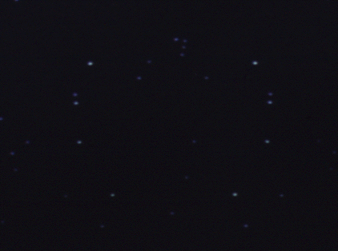

People With Too Much Free Time
OK. Someone thought they saw something funny in Titanic. Specifically,
near the end when Rose is about to roll off the debris she is on to
get the whistle from the grip of the frozen Titanic steward. There is a cut
to a second long look at the night time stars. In the lower left
quadrant of the screen, there is a distinctly crescent-looking
constellation. John Tsang swears that it is the Paramount Pictures logo.
I think it's there if you *want* to believe it. Steve Young tells me that
the IMDB says it is the "Heart Of The Ocean". S'up to you to decide what
*you* believe.
Thanks go to the Polytechnic and their slide scanner. A little Photoshop
work and expanding the horizontal of the image by 200%, and we're there.
